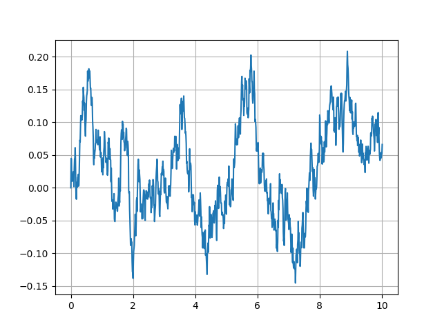
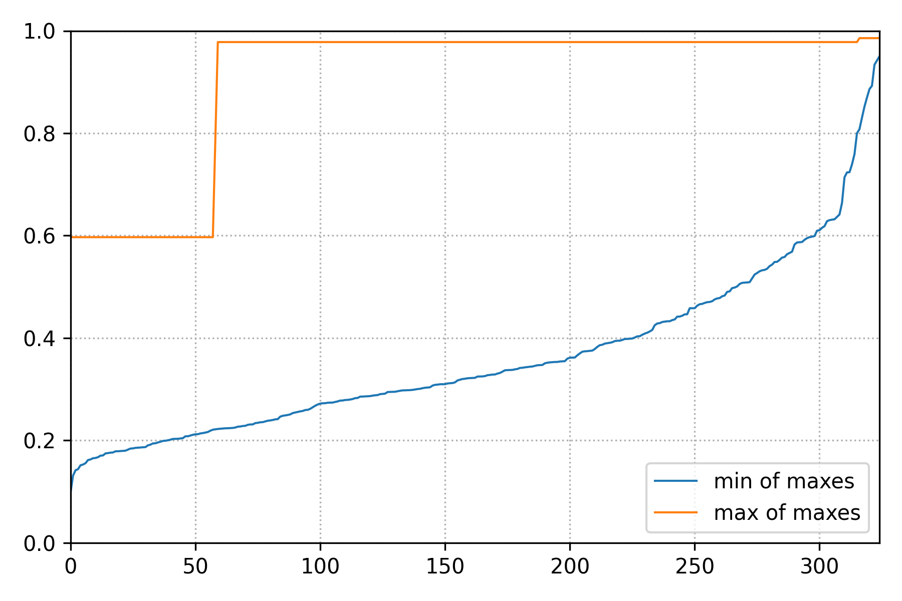

Tutorials¶
This set of tutorials is designed to guide the users through the process of encapsulating their stochastic dynamical system into the framework of pyTAMS in order to smoothly leverage the capabilities of rare event techniques.
With the exception of a few example cases shipped with the code, pyTAMS will always require the user to formulate her/his problem in as little as a few dozens of lines of code, to hundreds if the complexity of the model warrants it.
1D double well¶
In this first tutorial, our aim is to implement the 1D double well model already presented at the end of the Theory Section. This model is not already available in pyTAMS and will be written from scratch.
Background¶
As a reminder, the 1D double well stochastic dynamical system can be described with the following stochastic differential equation:
where \(f(X_t) = - \nabla V(X_t)\) is derived from a symmetric potential:
\(X_t \in \mathbb{R}\) is our Markov process, \(\epsilon\) is the noise scaling parameter and \(dW_t\) a 1D Wiener process. We will use a simple Euler-Maruyama method to advance the system in time.
Getting set up¶
If you haven’t done so yet, let’s get the latest version of pyTAMS installed on your system. In your favorite environment manager, simply use:
pip install pytams
tams_check
The second line check that pyTAMS is effectively installed and should return (with proper version numbers):
== pyTAMS vX.Y.Z :: a rare-event finder tool ==
Now create a new folder for us to work in:
mkdir tams_1d_doublewell
cd tams_1d_doublewell
Writting the forward model¶
Our first task is to implement the SDE provided above in a class that can interact with pyTAMS. As mentioned in the Implementation Section, one needs to wrap all the physics of the stochastic model into an Abstract Base Class (ABC).
To make it easier to start this process from scratch, pyTAMS provides a helper function:
tams_init_model -n doublewell1D
A local doublewell1D.py file in created, with a skeleton a your new doublewell1D
class, inheriting from pyTAMS required ABC and providing the minimal set of methods (functions)
that are required to run TAMS:
def _init_model(self, m_id: int, params: dict[typing.Any, typing.Any]) -> None:
def _advance(self, step: int, time: float, dt: float, noise: Any, need_end_state: bool) -> float:
def get_current_state(self) -> Any:
def set_current_state(self, state: Any) -> None:
def score(self) -> float:
def make_noise(self) -> Any:
We will now have to properly fill these six functions. Let’s start with _init_model function,
which is called by the superclass initializer and allow to initialize model-specific parameters:
def _init_model(self, m_id: int, params: dict[typing.Any, typing.Any]) -> None:
""" ... """
# Initialize the model state (a single float here)
# We always start at -1.0
self._state = -1.0
# Parse an amplitude factor from the input file
self._epsilon = params.get("model",{}).get("epsilon",0.02)
# Let's initialize the Random Number Generator (RNG) to use around
self._rng = np.random.default_rng()
In this simple model, the model state is a simple float. Note that the state type is
completely up to the user and/or requirements of the model. For instance, if you run an
external program, it might be a path to the program checkpoint file. The above code also
shows how to read-in parameters specified in the input file (see below). Finally, we
initialize a random number generator for subsequent use in the noise generation. This
is not specifically necessary, but it is good practice to control the RNG and we could
pass the model instance ID number m_id, to fix the seed of the RNG and make the runs
reproductible.
Let’s look at the getter and setter of the model state:
def get_current_state(self) -> Any:
""" ... """
return self._state
def set_current_state(self, state: Any) -> None:
""" ... """
self._state = state
These two are pretty straightforward for this simple model. Similarly, the make_noise
function writes:
def make_noise(self) -> Any:
""" ... """
return self._rng.standard_normal(1)[0]
Let’s now dive into the _advance function. We will use a Euler-Maruyama scheme to
update the model state, defining the drift function as another method of the class.
def _drift(self, x: float) -> float:
"""Drift function.
The drift function f = - nabla(V) = x - x^3
Args:
x: the model state
Returns:
The double well potential at the provided state
"""
return x - x**3
def _advance(self,
step: int,
time: float,
dt: float,
noise: Any,
need_end_state: bool
) -> float:
""" ... """
self._state = (
self._state + dt * self._drift(self._state)
+ np.sqrt(2 * dt * self._epsilon) * noise
)
return dt
Note that it is important to use the incoming noise noise and not generate another
noise within the advance function. This is because pyTAMS internally keep track of the
noises provided to the advance function, caching them when the model state is sub-sampled for instance.
Additionally, the advance function must return dt the actual time step size used by the model.
For the current model, this is simply the same as the input parameter dt, but some external
program might have other constraint not allowing the model to run for exactly the provided dt.
Finally, for the score function, we will use the \(\xi\) function mentioned in the Theory Section:
where \(\mathcal{B}\) is at \(X_t = x_b = 1.0\) and \(\mathcal{A}\) is at \(X_t = x_a = -1.0\),
with the later being our initial condition. Implementing this in the score function:
def score(self) -> float:
""" ... """
x_a = -1.0
x_b = 1.0
return (1.0 - np.sqrt((self._state - x_b)**2) / np.sqrt((x_a-x_b)**2))
One last thing we need, is to import the numpy package since we have used it in several places. At the top of your file, with the other imports, add:
import numpy as np
And that is pretty much all you need to have a functioning model class !
Testing the model¶
Before running TAMS, let’s test the model integration within pyTAMS framework by running
a single trajectory. In a separate python file (e.g. test_dw1D.py), copy the following:
from pathlib import Path
import toml
import matplotlib.pyplot as plt
from pytams.trajectory import Trajectory
from doublewell1D import doublewell1D
if __name__ == "__main__":
# For convenience
fmodel = doublewell1D
# Load the input file
with Path("input.toml").open("r") as f:
input_params = toml.load(f)
# Initialize a trajectory object
traj = Trajectory(0, 1.0, fmodel, input_params)
# Advance the model
traj.advance()
# Plain plot the trajectory score history
plt.plot(traj.get_time_array(), traj.get_score_array())
plt.grid()
plt.show()
Note that when running TAMS directly, the user does not have to load the input file
manually. We also need to initialize an input TOML file input.toml containing the trajectory
and model parameters (see Usage Section for a complete list
of input keys).
[trajectory]
end_time = 10.0
step_size = 0.01
[model]
epsilon = 0.05
We will simulate the random process for 10 time units, with a time step size of 0.01.
Let’s now run the script:
python test_dw1D.py
Hopefully, this should produce a graph of the same type as the one below (but with a different trajectory due to randomness).
{kind=link}

Score history for a single trajectory of the 1D double well model¶
Feel free to tweak the input parameters to see if you can trigger a transition ! We are all set to run TAMS.
Running TAMS¶
Similarly to the short script we wrote above to run a single trajectory, let
assemble a small script to run TAMS (e.g. in tams_dw1D.py):
from pytams.tams import TAMS
from doublewell1D import doublewell1D
if __name__ == "__main__":
# For convenience
fmodel = doublewell1D
# Initialize the algorithm object
tams = TAMS(fmodel_t=fmodel)
# Run TAMS and report
probability = tams.compute_probability()
print(f" TAMS converged with a transition probability: {probability}")
# Show the envolpe of the ensemble over the course
# of the algorithm
tams._tdb.plot_min_max_span("./doublewell1D_minmax.png")
We also need to update the input file with additional parameters relative to the algorithm parameters:
[tams]
ntrajectories = 50
nsplititer = 500
[trajectory]
end_time = 10.0
step_size = 0.01
targetscore = 0.95
[model]
epsilon = 0.04
[runner]
type = "asyncio"
nworker_init=1
nworker_iter=1
With above input parameters, the TAMS ensemble will contain 50 members and the algorithm will proceed up to a total 500 selection/mutation events. The model is assumed to have transitioned if the score function exceeds \(\xi_b = 0.95\). We will run using the asyncio runner, with a single worker during the initial ensemble generation and the iterarion process. We have reduced the noise level to \(\epsilon = 0.04\).
Let’s now run the script:
python tams_dw1D.py
The algorithm should run for a few seconds, depending on your platform and how fast the model transitions. The default log level will report on the algorithm progress during the entire process, and reports a final summary of the form:
####################################################
# TAMS v0.0.6 trajectory database #
# Date: 2025-11-26 14:58:21.980592+00:00 #
# Model: doublewell1D #
####################################################
# Requested # of traj: 50 #
# Requested # of splitting iter: 500 #
# Number of 'Ended' trajectories: 50 #
# Number of 'Converged' trajectories: 50 #
# Current splitting iter counter: 325 #
# Current total number of steps: 188618 #
# Transition probability: 0.0013906155192709678 #
####################################################
TAMS converged after 325 selection/mutation steps, time at which all 50 trajectories exceeded \(\xi_b\) within the 10 time units window. A total of 188618 model steps were taken and the transition probability estimate is \(\hat{P} = 1.39e^{-3}\).
In addition, the script above access the TAMS database to show the history of the ensemble score functions span (the span of \(\mathcal{Q}_{tr}\)).
{kind=link}

Span of \(\mathcal{Q}_{tr}\) over the course of the TAMS iterations.¶
We can this that in this high noise setting, one trajectory rapidly reaches \(\mathcal{B}\), but many more iterations are needed for the entire ensemble to transition.
This is all for this tutorial. We have covered the following points:
Getting pyTAMS
Going from a pen-and-paper SDE to a practical implementation ready for pyTAMS
Testing the model on a single, isolated trajectory
Running TAMS
To go a further, modify the tams_dw1D.py scritp to run TAMS \(K\) times and
provide a better estimate of the transition probability \(\overline{P}_K\), as well as
its relative error. What happens when \(\epsilon\) is reduced ? Can you trigger saving
the TAMS database to disk ?